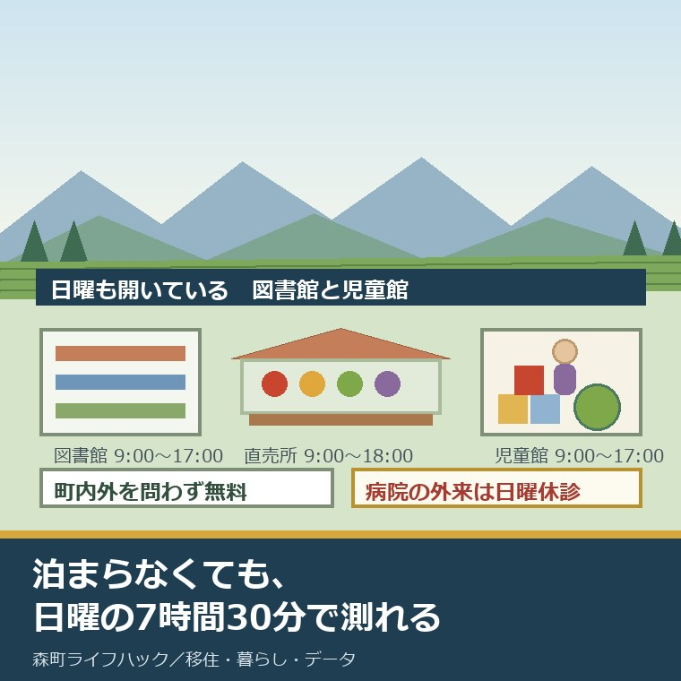
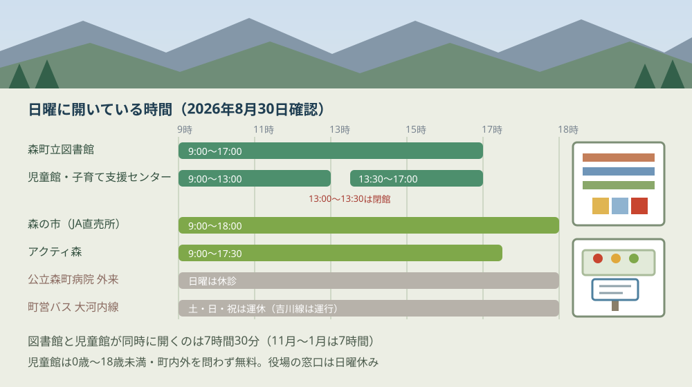
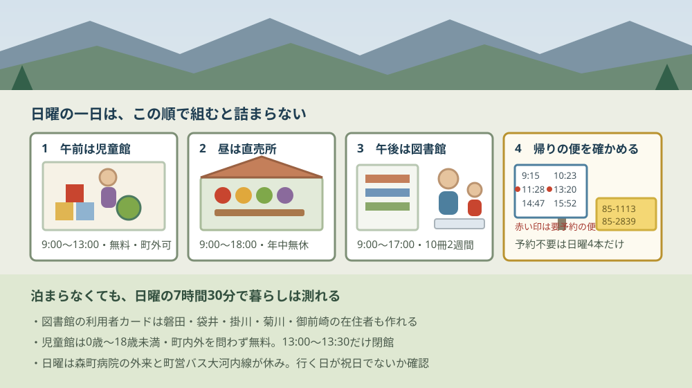

森町で暮らしを試す日曜｜図書館と子育て支援センター

この記事の要点
Q. 移住の前に、森町で家族の日曜を一日過ごしてみたい。どこが開いていますか。
A. 開いています。森町立図書館は9時〜17時、森町児童館・森町子育て支援センターは9時〜13時と13時30分〜17時で、どちらも町外の方が使えます。図書館の利用者カードは磐田・袋井・掛川・菊川・御前崎の5市在住なら作れます。ただし公立森町病院の外来と町営バス大河内線は日曜休みです。
静岡県周智郡森町（遠州森町）への移住を考えている子育て世帯から、こう聞かれることがあります。「日曜に一日行ってみたいのですが、町は開いていますか」というものです。
私は磐田市で小さな不動産業を営みながら、森町の空き家・農地・実家じまいのご相談を受けています。今日は2026年8月30日、日曜です。この日に確認できた範囲で、開いている場所と閉まっている場所を分けて並べます。
先に結論を書きます。森町の日曜は、子育て世帯にとって思ったより開いています。図書館も、児童館も、子育て支援センターも開いていて、どちらも町外の家族が使えます。
ただし、閉まっているものもあります。公立森町病院の外来と、町営バスの大河内線です。この2つを知らずに一日を組むと、後半で困ります。
公式情報から確定できること
2026年8月30日に、森町の公表ページ、森町立図書館の公表ページ、森町社会福祉協議会、公立森町病院、森町営バスの時刻表、天竜浜名湖鉄道、森町観光協会から確認できたことを順に並べます。出典は記事の末尾にまとめています。
一つ目。森町立図書館の休館日は、月曜日と年末年始と特別整理日です。月曜が祝日のときはその翌日が休館になります。年末年始は12月28日から1月4日まで。日曜は休館日に入っていません。
二つ目。開館時間は9時から17時です。水曜日だけ19時まで開いています。所在地は森町森1485、電話は0538-85-1113です。ページの更新日は2026年5月8日です。
三つ目。利用者カードは、町外の人も作れます。図書館の「利用のご案内」には「申し込みできる方は、森町に在住、在勤、通学されている方及び磐田市・袋井市・掛川市・菊川市・御前崎市に在住の方です」と書かれています。
四つ目。ただし近隣5市の方には条件がつきます。住所地の図書館の利用者カードも必要です。申請には利用者登録申請書と、住所・氏名を確認できるもの（運転免許証、保険証、学生証など）が要ります。
五つ目。貸出は図書10冊まで、2週間です。CDを借りた場合は図書とあわせて10点までになります。予約は一度に5点まで、取り置きの期限は2週間です。コピーは白黒1枚10円、カラー1枚50円です。
六つ目。森町児童館と森町子育て支援センターは、同じ建物にあります。所在地は森町森50-1、森町保健福祉センターの2階です。電話は0538-85-2839。担当は健康こども課こども家庭係（0538-86-6330）で、ページの更新日は2025年4月1日です。
七つ目。休館日は月曜日・祝日・年末年始です。日曜は入っていません。ただし祝日が日曜と重なる場合は、日曜と月曜が連日休館になります。ここは日曜に行く前に必ず確かめる欄です。
八つ目。利用時間は9時から13時と、13時30分から17時です。13時から13時30分は換気と整理整頓のため閉館します。11月から1月は9時から13時と13時30分から16時30分に短くなります。
九つ目。対象は0歳から18歳未満のすべての子どもで、町内外を問いません。公表ページには「0歳から18歳未満のすべてのこどもたちが安心・安全に遊べる場所です」「町内外問いません」と書かれています。小学生未満は保護者の同伴が必要です。
十番目。入館料は無料です。入館の際は受付名簿に記入します。混雑時は入館を制限する場合があるとされています。予約が要るかどうかは公表ページに記載がなく、ここは未確認のまま残します。
十一番目。定例の行事は、日曜には置かれていません。すくすくクラブは毎月第2木曜、のびのびクラブは第3木曜、森のくまさん広場は第2・第3水曜、赤ちゃんと一緒は第4火曜、おはなしぶらんこは第2・第4土曜の10時30分から、絵てがみ教室は第2土曜の14時30分からです。
十二番目。子育て相談は随時受け付けています。電話でも来館でも可能で、受付時間は9時から16時。ゆっくり相談したい人向けの子育て相談日は、毎月第2水曜の9時から16時です。
十三番目。「森の市」は、月に一度の市ではありません。JA遠州中央の農産物直売所で、所在地は森町森1731-2、電話は0538-85-0831。営業は9時から18時、定休日は年中無休（年末年始と盆は休みの日があります）で、駐車場は約30台です。日曜も開いています。
十四番目。森町体験の里「アクティ森」の定休日は水曜日です。所在地は森町問詰1115-1、電話は0538-85-0115。営業は9時から17時30分（12月から2月は17時まで）、入場料と駐車場は無料。日曜は営業しています。
十五番目。アクティ森の体験は当日でも入れる場合があります。公式ページに「当日は、お席に空きがあれば体験いただくことも可能です」と書かれています。陶芸の手ひねりが2,200円、和紙の葉すき（小）が1,100円、草木染めのハンカチが1,540円。和紙と草木染めは所要45分です。
十六番目。森町総合体育館「森アリーナ」の休館日は火曜日です。所在地は森町森92番地の8、電話は0538-85-4191。日曜は開いています。トレーニング室の当日券は一般300円、高校生以下と65歳以上が150円。ただし未就学児を同伴しての入室は控えるよう案内されています。
十七番目。公立森町病院の外来は、日曜は休診です。所在地は森町草ヶ谷391-1、電話は0538-85-2181。休診日は土曜日・日曜日・祝日・年末年始（12月29日から1月3日）。受付は月曜から金曜の8時00分から11時30分と、13時00分から15時30分です。
十八番目。森町営バスは2路線あり、日曜に走るのは1路線だけです。大河内線の運行日は月曜から金曜で、土曜・日曜・祝日は運休。吉川線は月曜から金曜と土曜・日曜・祝日で、運休日は無しです。町全体の移動の弱いところは森町の交通空白地域の記事にまとめました。
十九番目。吉川線の日曜の便数は、遠州森駅前発で6本です。9時15分、10時23分、11時28分、13時20分、14時47分、15時52分。このうち11時28分と13時20分は予約が必要な便で、予約先は株式会社アマガタ（0538-85-9800）です。
二十番目。町営バスの運賃は大人200円、小人100円、幼児100円です。小学校就学前の幼児が保護者と同乗する場合は、保護者1人につき2人まで無料になります。区間をまたぐと大人400円・小人200円です。
二十一番目。天竜浜名湖鉄道の遠州森駅は日曜も運行しています。所在地は森町森980-2。駅の営業時間は平日6時45分から16時15分、土日祝は9時00分から16時15分です。駅本屋と上りプラットホームは国の登録有形文化財です。
二十二番目。乗車券は現金のみです。交通系ICカードは使えません。未就学児は乗車券を持った客1名につき2名まで無料で、3名目からは小人運賃です。
二十三番目。森町のこども医療費助成は、18歳まで無料です。公表ページには「令和5年10月受診分から18歳(高校生世代)までの子どもの医療費が無料となります」と記されています。対象は森町に住所があり健康保険に加入している子どもです。
二十四番目。森町の小学校は3校、中学校は2校です。令和7年5月1日現在の児童数は3校で782人、生徒数は2校で407人。保育の受け皿は認可保育園2か所、小規模保育事業所2か所、認定こども園1か所です。

この図で描きたかったのは、13時から13時30分の切れ目です。児童館と子育て支援センターは、この30分だけ閉まります。換気と整理整頓のためと公表されています。
もう一つは下段の灰色の帯です。日曜に閉まっているものは、外来と大河内線の2つでした。役場の窓口も日曜は開いていません。移住の日帰りを日曜に組むなら、手続きの相談は別の日に回すことになります。
日曜の森町を、開いている時間で並べる
日曜に開いている施設を、時間と料金で表にします。すべて2026年8月30日に公表ページで確認した内容です。
| 場所 | 日曜の時間 | 休みの日 | 料金 |
|---|---|---|---|
| 森町立図書館 | 9:00〜17:00 | 月曜（祝日なら翌日）／年末年始／特別整理日 | 無料（コピー白黒10円・カラー50円） |
| 森町児童館・子育て支援センター | 9:00〜13:00／13:30〜17:00 | 月曜／祝日／年末年始 | 無料 |
| JA遠州中央 農産物直売所 森の市 | 9:00〜18:00 | 年中無休（年末年始・盆に休みの日あり） | — |
| 森町体験の里 アクティ森 | 9:00〜17:30（12〜2月は17:00） | 水曜／年末年始 | 入場・駐車場は無料（体験は1,100円〜） |
| 森町総合体育館 森アリーナ | 時間区分制（8:30〜21:30） | 火曜（祝日なら翌日）／年末年始 | トレーニング室 当日券300円／150円 |
| 公立森町病院 外来 | 休診 | 土曜・日曜・祝日・年末年始 | — |
この表でいちばん使えるのは、上の2行が重なっている時間です。図書館と児童館が同時に開いているのは、9時から13時と13時30分から17時の合わせて7時間30分です。11月から1月は児童館が16時30分までなので、7時間になります。
7時間30分という長さを、私は移住の下見にちょうどよいと考えます。午前に児童館で子どもを遊ばせ、昼に直売所へ寄り、午後に図書館で親が地域の資料を読む。これで一日が埋まります。
逆に、いちばん注意が要るのは下の1行です。公立森町病院の外来は日曜休診です。小児科は令和4年度時点で常勤の医師2名が在籍していますが、それは平日の話になります。日曜に子どもが急に熱を出したときの受け皿は、公表資料からは確認できませんでした。
車がない一日を、時刻表で組んでみる
移住の下見でいちばん差が出るのは、車を使わずに回れるかどうかです。ここは時刻表の数字だけで組みます。
森町営バスで日曜に走るのは吉川線だけです。大河内線は土曜・日曜・祝日が運休。吉川線は無休で、森町病院から元開橋・アクティ森を経て落合までを結びます。運行しているのは株式会社アマガタです。
| 便 | 遠州森駅前 発 | アクティ森 着 | 予約 |
|---|---|---|---|
| 1 | 9:15 | 9:33 | 不要 |
| 2 | 10:23 | 10:41 | 不要 |
| 3 | 11:28 | 11:46 | 要予約 |
| 4 | 13:20 | 13:38 | 要予約 |
| 5 | 14:47 | 15:05 | 不要 |
| 6 | 15:52 | 16:10 | 不要 |
この表から読めることが3つあります。一つ目。遠州森駅前からアクティ森までの所要は18分です。6便とも同じ18分で組まれています。
二つ目。6本のうち2本が予約制です。11時28分発と13時20分発。予約先は株式会社アマガタ（0538-85-9800）で、9時以降17時30分までの便は当日の1時間前まで、9時までの便は前日17時まで、17時30分以降は当日16時30分までに申し込みます。
三つ目。予約が要らない便だけで組むと、日曜に選べるのは4本です。9時15分、10時23分、14時47分、15時52分。午前と午後で2本ずつという形になります。
ここで運賃を割り戻します。大人200円、小学生100円、就学前の幼児は保護者1人につき2人まで無料です。大人2人と小学生1人の家族が遠州森駅前からアクティ森へ往復すると、200円が2人分と100円が1人分で片道500円、往復1,000円になります。
この1,000円を、私は安いと考えます。ただし本数のほうは別です。予約不要の便が午前2本・午後2本しかないので、1本逃すと次まで1時間から1時間半空きます。子どもを連れて時刻表どおりに動くのは、実際にはなかなか難しい。
鉄道のほうも押さえておきます。天竜浜名湖鉄道の遠州森駅は日曜も動いています。駅の営業時間は土日祝が9時00分から16時15分。乗車券は現金のみで、交通系ICカードは使えません。未就学児は大人1人につき2名まで無料です。
だから私はこう言い切ります。日曜の森町で、車を持たない家族が無理なく回れるのは、遠州森駅と吉川線の沿線までです。それ以外の地区へ行くなら、車が要ります。
良い点：町外の家族に対して、扉が開いている
公表資料を並べたうえで、評価できる点が4つありました。順に書きます。
一つ目。児童館・子育て支援センターが「町内外問いません」と明記していることです。移住を考えている家族が、住民票を移す前に使える。しかも0歳から18歳未満までが対象で、入館料は無料です。この一行があるかないかで、下見の一日の中身は変わります。
二つ目。図書館の利用者カードが、近隣5市の在住者にも開かれていることです。磐田市・袋井市・掛川市・菊川市・御前崎市。私の店がある磐田市も入っています。住所地の図書館のカードも要りますが、条件がはっきり書いてあるのは親切です。
三つ目。日曜に開いている場所が、歩ける範囲にまとまっていることです。図書館は森町森1485、児童館は森町森50-1、直売所の森の市は森町森1731-2。いずれも大字が「森」で、駅の周辺です。日曜の一日を組むうえで、これは効きます。
四つ目。こども医療費が18歳まで無料であることです。令和5年10月受診分から。入院・通院の保険診療分の自己負担と入院時食事療養費が対象で、県内の医療機関と処方せん薬局で受給者証が使えます。歯科・接骨院も対象です。移住後の家計に直接効く制度です。
注文したい点：日曜に行く側から見て足りないところ
ここからは、日曜に下見へ行く側の立場での注文を4つ書きます。町を批判したいのではなく、調べた側の報告です。
一つ目。日曜の急病の行き先が、公表ページから分からないことです。公立森町病院の外来は日曜休診で、深夜（22時から翌朝6時）の救急受診は原則できないと案内されています。町内の他の小児科や休日夜間の受け皿については、公表ページを確認できませんでした。子連れの下見でいちばん不安なのは、ここです。
二つ目。日曜に開いている場所を一覧にしたページが無いことです。図書館、児童館、直売所、アクティ森、体育館。それぞれのページを別々に開いて、休館日の欄を1つずつ読む必要があります。私も今回、6つのページを突き合わせました。
三つ目。施設のページの更新日が、大きくばらついていることです。図書館は2026年5月8日、児童館は2025年4月1日、体育施設は2020年12月22日、アクティ森の町側のページは2020年1月29日。古いページの数字をそのまま信じてよいのかは、外からは判断できません。
四つ目。子育て応援サイトの記載が古いままだったことです。森町の子育て応援サイトにある同じ施設の案内（更新日2023年4月3日）は、利用時間を9時から13時、14時から16時30分としています。町の担当課のページ（2025年4月1日更新）と森町社会福祉協議会のサイトは9時から13時、13時30分から17時で一致しており、こちらが新しい内容です。同じ町のサイト内で数字が2種類あるのは、確かめる側には負担です。

この図で午前に児童館を置いたのには理由があります。13時から13時30分が閉館だからです。昼をまたいで居続けることはできません。昼食と買い物を、この30分に合わせるほうが動きやすくなります。
四段目にバス停を置いたのは、帰りの便のほうが先に無くなるからです。アクティ森発で予約が要らない最終は15時26分、遠州森駅前着は15時45分です。予約すれば16時31分発（駅前16時50分着）まで延ばせます。
対案・結論：今日、ご家族が確かめられること
日曜に森町へ行く日を決める前に、進められることがあります。順番に5つ書きます。
一つ目。行く日曜が祝日と重なっていないかを確かめてください。森町児童館・子育て支援センターは祝日が休館日です。祝日が日曜と重なる場合は、日曜と月曜が連日休館になります。カレンダーを1回見るだけの作業ですが、これを飛ばすと目的地の半分が閉まります。
二つ目。森町立図書館（0538-85-1113）に、利用者カードを当日作れるか電話で聞いてください。磐田市・袋井市・掛川市・菊川市・御前崎市にお住まいなら申し込めます。住所地の図書館のカードと、住所・氏名を確認できるものを持っていくことになります。持ち物を先に聞いておくと、当日その場で借りて帰れます。
三つ目。森町児童館（0538-85-2839）に、当日の混み具合と持ち物を聞いてください。混雑時は入館を制限する場合があるとされています。予約が要るかどうかは公表ページに書かれていないので、電話で確かめるのが確実です。
四つ目。車を使わない日を1回作ってみてください。吉川線の予約不要の便は日曜に4本だけです。9時15分、10時23分、14時47分、15時52分。この4本で一日を組めるかどうかで、車が何台要る暮らしかが分かります。免許を返したあとの生活も、同じ時刻表の上にあります。
五つ目。その日曜に、住みたい地区を1つだけ歩いてください。施設を回るだけでは地区の差は出ません。空き家バンクの物件がある地区の価格差は森町の空き家バンク23件の記事に、一日の過ごし方そのものは何もない日曜日を家族で過ごす記事に書きました。
ここまでやっても、移住するかどうかを今日決める必要はありません。今日の成果は、日曜に開いている場所と閉まっている場所が分かれたことです。次に行く日を決めるとき、この一覧がそのまま使えます。
家族に残す記録
行った日のことは、その日のうちに1枚にまとめてください。移住の検討は年単位になることが多く、半年空けると「あのとき何時だったか」が思い出せなくなります。
書き出す項目は6つです。①行った日曜の日付と、祝日と重なっていたかどうか ②児童館で子どもが何分遊べたか ③図書館で利用者カードを作れたか（作れなかった場合は理由） ④昼食をどこで取ったか ⑤バスか車か、車なら駐車場に困った場所 ⑥子どもが「また来たい」と言ったかどうか。
加えて、確認できなかったことも同じ紙に残します。「日曜の小児科の受け皿は未確認」「児童館の予約要否は未確認」「森町立図書館の蔵書数は未公表」の3つです。次に電話するときの質問が、この欄からそのまま作れます。
もう一つ、不動産の側から一行足してください。その日に通った道の幅と、家の前で車がすれ違えたかどうか。移住したあと毎日通る道です。図書館まで何分かより、この一行のほうが半年後に効きます。
大石の視点
ここからは公表資料の話ではなく、私がどう見ているかを書きます。森町の児童館や図書館で家族に付き添った現場の一場面は手元の記録に無いので、体験談としてではなく意見として明示します。
私がこの記事を書いていていちばん驚いたのは、森町立図書館の利用者カードが磐田市の住民にも作れるという一行でした。磐田市・袋井市・掛川市・菊川市・御前崎市の5市。町の外の人に本を貸す、という判断を町がしています。
これは小さいことではありません。移住を考えている家族にとって、その町の図書館カードを持つことは、住む前に町とつながる数少ない方法です。住民票を動かさなくても、10冊を2週間借りられる。関係の作り方として、これほど手前にある入口はそう多くありません。
だから私はこう言い切ります。森町で暮らしを試す一日は、図書館のカードを作るところから始めるのがいちばん早い。物件を見るより、役場に相談するより先に、これができます。
一方で、引っかかっていることもあります。日曜に子どもが熱を出したときに、どこへ行けばよいのかが分からないことです。公立森町病院の外来は土日祝が休診。町内の他の受け皿は、公表ページで確認できませんでした。
ここは私にも分かりません。実際には近隣市の休日当番医に行くのだと思いますが、それを森町の公表ページから確かめる方法が見つからないのです。推測として書くなら、地域の休日当番医の情報は郡市の医師会が持っているのだろうと読んでいます。ただし裏付けはありません。
もう一つ、私が数字を見て考えたことを書きます。森町の小学校3校の児童数は782人、中学校2校の生徒数は407人です（令和7年5月1日）。合わせて1,189人。人口16,422人の町で、小中学生は7.2パーセントにあたります。
この規模だから、児童館が1か所で足りています。逆に言えば、1か所しかないということでもあります。森町森50-1、保健福祉センターの2階。町の南側の地区から子どもだけで通うのは、日曜のバスの本数を見る限り現実的ではありません。
それでも私は、この町の日曜を「開いているほう」だと評価します。図書館が9時から17時、児童館が7時間30分、直売所が9時間、体験施設が8時間30分。町の規模を考えると、これは支える側がかなり払っている形です。
不動産の目で言えば、こういう町は住所を選びやすい。日曜に開いている施設が大字「森」に集まっているので、そこから何分の場所に住むかで生活が組み立てられます。逆に、そこから遠い地区を選ぶなら、車2台を前提に家計を組む必要が出てきます。
最後に、移住を考えているご家族へ。私は「まだ決めない」という状態を、悪いことだとは思っていません。ただ、日曜を一日過ごしてみると、決めるための材料は確実に増えます。住民票をどちらに置くかという先の話は二拠点生活の住民票を整理した記事に、お試しで泊まれる場所の状況は森町のお試し移住住宅を追いかけた記事に書きました。
まとめ
この記事で確認した事実を、最後に並べ直します。すべて2026年8月30日時点で公表されている内容です。
- 森町立図書館（森町森1485・0538-85-1113）は日曜開館。開館時間は9時から17時（水曜のみ19時まで）。休館日は月曜（祝日なら翌日）・年末年始（12月28日〜1月4日）・特別整理日（ページ更新日2026年5月8日）
- 図書館の利用者カードは、森町に在住・在勤・通学の方と、磐田市・袋井市・掛川市・菊川市・御前崎市に在住の方が作れる。近隣5市の方は住所地の図書館の利用者カードも必要
- 貸出は図書10冊まで（CD含め10点まで）で2週間。予約は一度に5点まで、取り置き期限は2週間。コピーは白黒10円・カラー50円
- 森町児童館・森町子育て支援センター（森町森50-1・森町保健福祉センター2階・0538-85-2839）は日曜開館。休館日は月曜・祝日・年末年始。祝日が日曜と重なる場合は日曜と月曜が連日休館（ページ更新日2025年4月1日）
- 利用時間は9時から13時と13時30分から17時（11月から1月は16時30分まで）。13時から13時30分は換気・整理整頓のため閉館
- 対象は0歳から18歳未満のすべての子どもで町内外を問わない。小学生未満は保護者同伴。入館料は無料。担当は健康こども課こども家庭係（0538-86-6330）
- 定例行事は木曜・水曜・火曜・土曜に置かれており、日曜には設定されていない。子育て相談は随時受付（9時から16時）、子育て相談日は毎月第2水曜
- 「森の市」はJA遠州中央の農産物直売所（森町森1731-2・0538-85-0831）。9時から18時、年中無休（年末年始・盆に休みの日あり）、駐車場約30台。月1回の市ではない
- 森町体験の里「アクティ森」（森町問詰1115-1・0538-85-0115）の定休日は水曜と年末年始。9時から17時30分（12月から2月は17時まで）、入場料・駐車場は無料。陶芸手ひねり2,200円、和紙葉すき（小）1,100円、草木染めハンカチ1,540円
- 森町総合体育館「森アリーナ」（森町森92番地の8・0538-85-4191）の休館日は火曜（祝日なら翌日）と年末年始。トレーニング室の当日券は一般300円・高校生以下と65歳以上150円、未就学児の同伴入室は不可
- 公立森町病院（森町草ヶ谷391-1・0538-85-2181）の外来は土曜・日曜・祝日・年末年始が休診。受付は月曜から金曜の8時00分〜11時30分と13時00分〜15時30分
- 森町営バスは大河内線が土日祝運休、吉川線が無休。吉川線の遠州森駅前発は日曜6本（9:15／10:23／11:28／13:20／14:47／15:52）で、11:28と13:20は要予約（株式会社アマガタ 0538-85-9800）
- 遠州森駅前からアクティ森までの所要は18分。運賃は大人200円・小人100円・幼児100円で、就学前の幼児は保護者1人につき2人まで無料。大人2人と小学生1人の往復は1,000円（執筆者の計算）
- 天竜浜名湖鉄道 遠州森駅（森町森980-2）の駅営業時間は土日祝9時00分から16時15分。乗車券は現金のみで交通系ICカードは使えない。未就学児は乗車券を持った客1名につき2名まで無料
- 森町のこども医療費助成は令和5年10月受診分から18歳（高校生世代）まで無料
- 森町の小学校は3校で児童782人、中学校は2校で生徒407人（令和7年5月1日）。保育は認可保育園2か所・小規模保育事業所2か所・認定こども園1か所
- 図書館と児童館が同時に開いているのは日曜7時間30分（11月から1月は7時間／執筆者の計算）
- 日曜の小児科の受け皿、児童館の予約要否、森町立図書館の蔵書数は、いずれも公表を確認できなかった
よくある質問
Q1. 森町立図書館は日曜に開いていますか。町外に住んでいても借りられますか。
A1. 森町立図書館の休館日は月曜日（月曜が祝日のときはその翌日）、年末年始（12月28日から1月4日）、特別整理日です。日曜は休館日に含まれず、開館時間は9時から17時です（水曜のみ19時まで）。利用者カードは、森町に在住・在勤・通学の方に加え、磐田市・袋井市・掛川市・菊川市・御前崎市に在住の方も作れます。近隣5市の方は住所地の図書館の利用者カードも必要です。
Q2. 森町の子育て支援センターは、日曜に町外の家族でも使えますか。
A2. 森町児童館・森町子育て支援センターの休館日は月曜日・祝日・年末年始で、日曜は開いています。対象は0歳から18歳未満のすべての子どもで、町内外を問いません。小学生未満は保護者の同伴が必要です。入館料は無料で、利用時間は9時から13時と13時30分から17時（11月から1月は16時30分まで）です。祝日が日曜と重なる日は休館になります。
Q3. 車がなくても、日曜に森町を回れますか。
A3. 回れる範囲は限られます。森町営バスは2路線あり、大河内線は土曜・日曜・祝日が運休、吉川線は無休で日曜も走ります。吉川線の遠州森駅前発は土日祝で6本、うち2本は予約が必要です。天竜浜名湖鉄道の遠州森駅は日曜も運行していますが、乗車券は現金のみで交通系ICカードは使えません。
最後に一つだけ。ここに書いた開館時間、休館日、料金、時刻、電話番号、更新日は、いずれも森町の公表ページ、森町立図書館の公表ページ、森町社会福祉協議会、公立森町病院、森町営バスの時刻表、天竜浜名湖鉄道、森町観光協会、アクティ森の公表内容を、2026年8月30日に確認して書き写したものです。図書館と児童館が同時に開いている7時間30分、家族3人のバス往復1,000円、小中学生が人口の7.2パーセントという数字は、私が公表値から計算した概算であり、公表されている統計ではありません。日曜の小児科の受け皿、児童館・子育て支援センターの予約要否、森町立図書館の蔵書数は確認できていません。森町の子育て応援サイトにある同じ施設の案内（更新日2023年4月3日）は利用時間を別の値で記載しており、本記事は担当課のページ（2025年4月1日更新）と森町社会福祉協議会の記載に従いました。開館時間・料金・運行は変更されることがあります。出かける前に、必ず各施設の公表ページと電話でご確認ください。
参考にした公式情報
- 森町児童館・森町子育て支援センター／静岡県森町（「更新日：2025年04月01日」と表示されていること、所在地が森町森50-1（森町保健福祉センター2階）、電話が0538-85-2839、ファックスが0538-85-1505であること、休館日が月曜日・祝日・年末年始であること、「祝日が日曜日と重なる場合は、日曜日と月曜日が連日休館になります。」と記載されていること、利用時間が9時から13時と13時30分から17時（11月から1月は16時30分まで）で13時から13時30分は換気・整理整頓のため閉館すること、「0歳から18歳未満のすべてのこどもたちが安心・安全に遊べる場所です」「町内外問いません。」と記載され小学生未満は保護者同伴が必要であること、入館料が無料で受付名簿への記入が必要であること、子育て相談の受付が9時から16時で子育て相談日が毎月第2水曜であること、担当が健康こども課こども家庭係（0538-86-6330）であることを2026年8月30日に確認）
- 森町立図書館（施設案内）／静岡県森町（「更新日：2026年05月08日」と表示されていること、所在地が〒437-0215 静岡県周智郡森町森1485、電話が0538-85-1113、ファックスが0538-84-0030であること、「開館時間 9時～17時(但し、水曜日は19時まで)」と記載されていること、休館日が月曜日（月曜日が祝日のときはその翌日）・年末年始（12月28日から1月4日）・特別整理日であることを2026年8月30日に確認）
- 利用のご案内／森町立図書館（「申し込みできる方は、森町に在住、在勤、通学されている方及び磐田市・袋井市・掛川市・菊川市・御前崎市に在住の方です。」と記載されていること、近隣5市在住者は住所地の図書館の利用者カードも必要であること、「図書は一人10冊まで、CDを借りた場合は、図書とあわせて10点までです。」「いずれも2週間借りられます。」と記載されていること、予約が一度に5点まで・取り置き期限が2週間であること、コピーが白黒1枚10円・カラー1枚50円であることを2026年8月30日に確認）
- 児童館・子育て支援センター／森町社会福祉協議会（「休館日 月曜日・祝日・年末年始」と記載され、利用時間が9時から13時・13時30分から17時で森町の担当課ページと一致することを2026年8月30日に確認）
- JA遠州中央 農産物直売所 森の市／森町観光協会（所在地が静岡県周智郡森町森1731-2、電話が0538-85-0831であること、営業時間が9時00分から18時00分であること、「定休日 年中無休（年末年始、盆は休日の日があります）」と記載されていること、駐車場が約30台であること、常設の農産物直売所であり月1回開催の市ではないことを2026年8月30日に確認）
- 営業案内／森町体験の里 アクティ森（所在地が静岡県周智郡森町問詰1115-1、電話が0538-85-0115であること、営業時間が9時00分から17時30分（12月から2月は17時00分まで）であること、「定休日 ■水曜日 ■年末年始（祝日は営業します）」と記載されていること、「入場料・駐車場 無料」と記載されていること、森のレストランかわせみが10時から16時（ラストオーダー15時）で火曜・水曜が定休、森のよんな市が9時30分から16時で水曜定休であることを2026年8月30日に確認）
- 創作体験する／森町体験の里 アクティ森（陶芸の手ひねりが2,200円、和紙の葉すき（小）が1,100円、草木染めのハンカチが1,540円であること、和紙と草木染めの所要時間が45分であること、「当日は、お席に空きがあれば体験いただくことも可能です。」と記載されていることを2026年8月30日に確認）
- 森町の体育施設／静岡県森町（「更新日：2020年12月22日」と表示されていること、森町総合体育館「森アリーナ」の所在地が静岡県周智郡森町森92番地の8、電話が0538-85-4191であること、休館日が毎週火曜日（祝日の場合は翌日）と年末年始（12月28日から1月4日）であること、トレーニング室の当日券が一般300円・高校生以下および65歳以上150円であること、「小さなお子様（未就学児）同伴の入室は、ご遠慮ください。」と記載されていることを2026年8月30日に確認）
- 外来のご案内／公立森町病院（「休診日 土曜日・日曜日・祝日・年末年始(12月29日～1月3日)」と記載されていること、診療受付が毎週月曜日から金曜日の8時00分から11時30分および13時00分から15時30分であることを2026年8月30日に確認）
- 森町営バス時刻表（令和7年4月1日改正）／静岡県森町（大河内線の運行日が月曜から金曜で運休日が土・日・祝日ほかであること、吉川線の運行日が月曜から金曜および土・日・祝日で運休日が無しであること、土日祝の遠州森駅前発が9時15分・10時23分・11時28分・13時20分・14時47分・15時52分の6本で11時28分と13時20分が予約の必要な便であること、アクティ森着がそれぞれ9時33分・10時41分・11時46分・13時38分・15時05分・16時10分であること、アクティ森発の予約不要の最終が15時26分で遠州森駅前着が15時45分であること、予約先が株式会社アマガタ（0538-85-9800）であること、運賃が大人200円・小人100円・幼児100円で「小学校就学前の幼児が保護者と同乗する場合、保護者1人につき、2人まで無料になります。」と記載されていることを2026年8月30日に確認）
- 遠州森駅／天竜浜名湖鉄道（所在地が森町森980-2、電話が0538-85-2211であること、「駅営業時間 平日06:45～16:15 土日祝09:00～16:15」と記載されていること、駅本屋及び上りプラットホームが国の登録有形文化財であることを2026年8月30日に確認）
- こども医療費助成／静岡県森町（「更新日：2023年09月15日」と表示されていること、「令和5年10月受診分から18歳(高校生世代)までの子どもの医療費が無料となります」と記載されていること、対象が森町に住所があり健康保険に加入している子どもであること、助成対象が入院・通院の保険診療分の自己負担金および入院時食事療養費であることを2026年8月30日に確認）
- 小学校・中学校／静岡県森町 子育て応援サイト（「森町内には、公立の小学校が3校、中学校が2校あります。」と記載されていること、小学校が森小・宮園小・飯田小、中学校が森中・旭が丘中であること、放課後児童クラブが5クラブであることを2026年8月30日に確認）
- 森町の学校（統計）／静岡県森町（令和7年5月1日現在の小学校3校の児童数が計782人（森363・宮園261・飯田158）、中学校2校の生徒数が計407人（旭が丘221・森186）であることを2026年8月30日に確認）
- 保育所等について／静岡県森町（「更新日：2026年08月12日」と表示されていること、「森町には、私立認可保育園が2ヶ所、小規模保育事業所が2ヶ所、認定こども園が1ヶ所あります。」と記載されていることを2026年8月30日に確認）
- 森町の月別人口／静岡県森町（「更新日：2026年08月05日」と表示されていること、2026年8月1日現在の総人口が16,422人（男8,213人・女8,209人）、世帯数が6,763世帯と記載されていることを2026年8月30日に確認）

最終確認日：2026-08-30 ／ 本記事は公表情報と執筆者の見解を分けて記載しています。図書館と児童館が同時に開いている7時間30分、家族3人のバス往復1,000円、小中学生が人口の7.2パーセントという数字は、いずれも執筆者が公表値から計算した概算であり、公表されている統計ではありません。日曜の小児科の受け皿、森町児童館・子育て支援センターの予約要否、森町立図書館の蔵書数は、2026年8月30日時点で確認できていません。森町の子育て応援サイトにある同じ施設の案内（更新日2023年4月3日）は利用時間を別の値で記載しており、本記事は担当課のページ（2025年4月1日更新）と森町社会福祉協議会の記載に従いました。アクティ森については森町の公表ページ（更新日2020年1月29日）より新しいアクティ森公式サイトの値を採用しています。開館時間・休館日・料金・運行は変更されることがあります。出かける前に、必ず各施設の公表ページと電話でご確認ください。